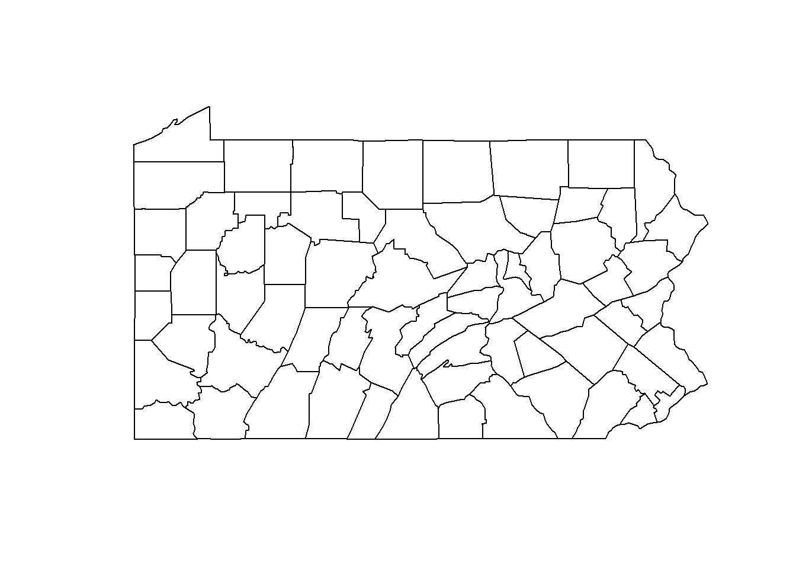
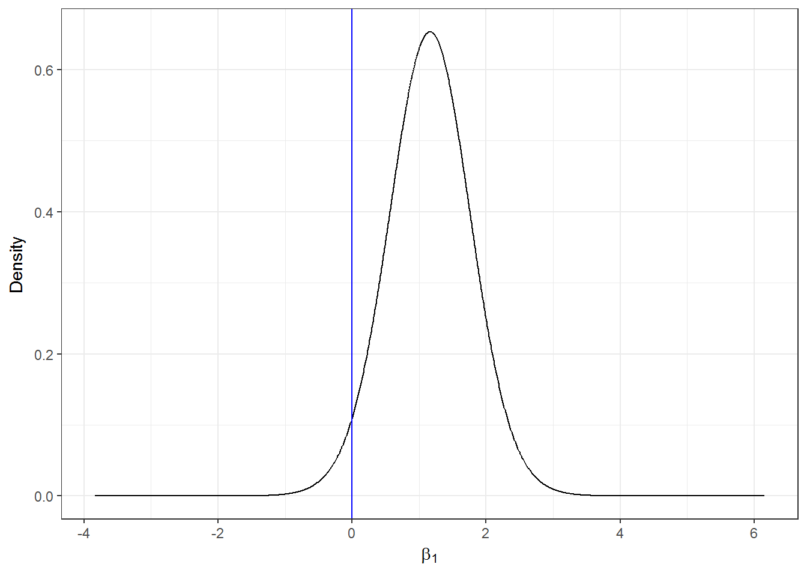

Areal data. Lung cancer risk in Pennsylvania
Paula Moraga
CHICAS, Lancaster University, UK
10 June 2018
In this tutorial we use disease mapping methods to estimate lung cancer risk in Pennsylvania, United States, in year 2002. We use data of the R package SpatialEpi which contains the population, the lung cancer cases and the smoking proportions in the Pennsylvania counties. Population data was obtained from the 2000 decennial census, and the disease cases and smoking proportions were obtained from the Pennsylvania Department of Health website.
We show how to calculate the observed and expected disease cases, and the Standardized Mortality Ratios (SMRs) in each of the Pennsylvania counties. We also obtain disease risk estimates and quantify risk factors using INLA. Finally, we show how to make interactive maps of the risk estimates using leaflet.
A extended version of this example appears in Moraga, 2018.
1 Data and map
We start by loading the SpatialEpi package and attaching the data.
library(SpatialEpi)
data(pennLC)Next we inspect the data.
class(pennLC)## [1] "list"names(pennLC)## [1] "geo" "data" "smoking" "spatial.polygon"?pennLCWe see that pennLC is a list object with the following elements:
geo: a table of county ids, and the longitude and latitude of the centroid of each county,data: a table of county ids, number of cases, population and strata information,smoking: a table of county ids and proportion of smokers,spatial.polygon: aSpatialPolygonsobject.
We inspect the first rows of pennLC$data and pennLC$smoking. pennLC$data contains the number of lung cancer cases and the population at county level, stratified on race (white and non-white), gender (female and male) and age (under 40, 40-59, 60-69 and 70+).
head(pennLC$data)pennLC$smoking contains county-specific proportion of smokers.
head(pennLC$smoking)The map of Pennsylvania counties is given by the SpatialPolygons object called pennLC$spatial.polygon. We can plot the map as follows:
map <- pennLC$spatial.polygon
plot(map)
2 Data preparation
We now create a data frame called d with columns containing the counties ids, the observed and expected number of cases, the smoking proportions and the SMRs. Specifically, d will contain the following columns:
county: id of each county,Y: observed number of cases in each county,E: expected number of cases in each county,smoking: smoking proportion in each county,SMR: SMR of each county.
2.1 Observed cases
pennLC$data contains the cases in each county stratified by race, gender and age. We can obtain the number of cases in each county, Y, by aggregating the rows of pennLC$data by county and adding up the observed number of cases.
library(dplyr)
d <- group_by(pennLC$data, county) %>% summarize(Y = sum(cases))
head(d)2.2 Expected cases
Now we calculate the expected number of cases in each county using indirect standardization. The expected counts in each county represent the total number of disease cases one would expect if the population in the county behaved the way the Pennsylvania population behaves. We can do this by using the expected() function of the SpatialEpi package. This function has three arguments, namely,
population: a vector of population counts for each strata in each area,cases: a vector with the number of cases for each strata in each area,n.strata: number of strata considered.
Vectors population and cases have to be sorted by area first and then, within each area, the counts for all strata need to be listed in the same order. All strata need to be included in the vectors, including strata with 0 cases.
In order to obtain the expected counts we first sort the data using the order() function where we specify the order as county, race, gender and finally age.
pennLC$data <- pennLC$data[order(pennLC$data$county, pennLC$data$race, pennLC$data$gender, pennLC$data$age), ]Then, we obtain the expected counts E in each county by calling the expected() function where we set population equal to pennLC$data$population and cases equal to pennLC$data$cases. There are 2 races, 2 genders and 4 age groups for each county, so number of strata is set to 2 x 2 x 4 = 16.
E <- expected(population = pennLC$data$population, cases = pennLC$data$cases, n.strata = 16)Now we add the vector E to the data frame d which contains the counties ids (county) and the observed counts (Y) making sure the E elements correspond to the counties in d$county in the same order. To do that, we use match() to calculate the vector of the positions that match d$county in unique(pennLC$data$county) which are the corresponding counties of E. Then we rearrange E using that vector.
d$E <- E[match(d$county, unique(pennLC$data$county))]
head(d)2.3 Smokers proportions
We also add to d the variable smoking which represents the proportion of smokers in each county. We add this variable using the merge() function where we specify county as the column for merging.
d <- merge(d, pennLC$smoking, by = "county")2.4 SMRs
Finally, we compute the vector of SMRs as the ratio of the observed to the expected counts, and add it to the data frame d.
d$SMR <- d$Y/d$E2.5 Data
The final dataset is this:
head(d)2.6 Add data to map
We have constructed a data frame d containing the observed and expected disease counts, the smokers proportions and the SMR for each of the counties. The map of Pennsylvania counties is given by the SpatialPolygons object called map. Using this object and the data frame d we can create a SpatialPolygonsDataFrame that will allow us to make maps of the variables in d. In order to do that, we first set the row names of the data frame d equal to d$county. Then we merge the SpatialPolygons map and the data frame d matching the SpatialPolygons member Polygons ID slot values with the data frame row names (match.ID = TRUE).
library(sp)
rownames(d) <- d$county
map <- SpatialPolygonsDataFrame(map, d, match.ID = TRUE)
head(map@data)3 Mapping SMR
We can visualize the observed and expected disease counts, the SMRs, as well as the smokers proportions in an interactive chropleth map. We construct this map using the leaflet package.
We create the map by first calling leaflet() and adding the default OpenStreetMap map tiles to the map with addTiles(). Then we add the Pennsylvania counties with addPolygons() where we specify the areas boundaries color (color) and the stroke width (weight). We fill the areas with the colours given by the color palette function generated with colorNumeric(), and set fillOpacity to a value less than 1 to be able to see the background map. We use colorNumeric() to create a color palette function that maps data values to colors according to a given palette. We create the function using the two following parameters:
palette: color function that values will be mapped to, anddomain: possible values that can be mapped.
Finally, we add the legend by specifying the color palette function (pal) and the values used to generate colors from the palette function (values). We set opacity to the same value as the opacity in the areas, and specify a title and a position for the legend.
library(leaflet)
l <- leaflet(map) %>% addTiles()
pal <- colorNumeric(palette = "YlOrRd", domain = map$SMR)
l %>% addPolygons(color = "grey", weight = 1, fillColor = ~pal(SMR), fillOpacity = 0.5) %>%
addLegend(pal = pal, values = ~SMR, opacity = 0.5, title = "SMR", position = "bottomright")We can improve the map by highlighting the counties when the mouse hovers over them, and showing information about the observed and expected counts, SMRs, and smoking proportions. We do this by adding the arguments highlightOptions, label and labelOptions to addPolygons(). We choose to highlight the areas using a bigger stroke width (highlightOptions(weight = 4)). We create the labels using HTML syntax. First, we create the text to be shown using the function sprintf() which returns a character vector containing a formatted combination of text and variable values and then applying htmltools::HTML() which marks the text as HTML. In labelOptions we specify the labels style, textsize, and direction. Possible values for direction are left, right and auto and this specifies the direction the label displays in relation to the marker. We choose auto so the optimal direction will be chosen depending on the position of the marker.
labels <- sprintf("<strong>%s</strong><br/>Observed: %s <br/>Expected: %s <br/>Smokers proportion: %s <br/>SMR: %s",
map$county, map$Y, round(map$E, 2), map$smoking, round(map$SMR, 2)) %>%
lapply(htmltools::HTML)
l %>% addPolygons(color = "grey", weight = 1, fillColor = ~pal(SMR), fillOpacity = 0.5,
highlightOptions = highlightOptions(weight = 4),
label = labels,
labelOptions = labelOptions(style = list("font-weight" = "normal", padding = "3px 8px"),
textsize = "15px", direction = "auto")) %>%
addLegend(pal = pal, values = ~SMR, opacity = 0.5, title = "SMR", position = "bottomright")Now we can examine the map and see which areas have
- SMR \(=\) 1 which indicates observed cases are the same as expected,
- SMR \(>\) 1 which indicates observed cases are higher than expected,
- SMR \(<\) 1 which indicates observed cases are lower than expected.
This map gives a sense of the disease risk across Pennsylvania. However, SMRs may be misleading and insufficiently reliable in counties with small populations. In contrast, model-based approaches enable to incorporate covariates and borrow information from neighboring counties to improve local estimates, resulting in the smoothing of extreme values based on small sample sizes. In the next section we will show how to obtain disease risk estimates using a model using INLA.
4 Modelling
In this Section we specify the model for the observed data, and detail the required steps to fit the model and obtain the disease risk estimates using INLA.
4.1 Model
Let \(Y_i\) and \(E_i\) be the observed and expected number of disesase cases, respectively, and let \(\theta_i\) be the relative risk for county \(i=1,\ldots,n\). The model is specified as follows:
\[Y_i|\theta_i \sim Poisson(E_i \times \theta_i),\ i=1,\ldots,n,\]
\[\log(\theta_i) = \beta_0 + \beta_1 \times smoking_i + u_i + v_i.\]
- \(\beta_0\) is the intercept,
- \(\beta_1\) is the coefficient of the smokers proportion covariate,
- \(u_i\) is a structured spatial effect, \(u_i|\mathbf{u_{-i}} \sim N(\bar{u}_{\delta_i}, \frac{1}{\tau_u n_{\delta_i}})\) (Conditionally autoregressive model (CAR)),
- \(v_i\) is an unstructured spatial effect, \(v_i \sim N(0, 1/\tau_v)\).
4.2 Neighbourhood matrix
We create the neighbourhood matrix needed to define the spatial random effect using the poly2nb() and the nb2INLA() functions of the spdep package. First, we use poly2nb() to create a neighbours list based on areas with contiguous boundaries. Each element of the list nb represents one area and contains the indices of its neighbours. For example, nb[[2]] contains the neighbours of area 2.
Then, we use nb2INLA() to convert this list into a file with the representation of the neighbourhood matrix as required by INLA. Then we read the file using the inla.read.graph() function of INLA, and store it in the object g which we will later use for specifying the spatial disease model with INLA.
library(spdep)
library(INLA)
nb <- poly2nb(map)
head(nb)## [[1]]
## [1] 21 28 67
##
## [[2]]
## [1] 3 4 10 63 65
##
## [[3]]
## [1] 2 10 16 32 33 65
##
## [[4]]
## [1] 2 10 37 63
##
## [[5]]
## [1] 7 11 29 31 56
##
## [[6]]
## [1] 15 36 38 39 46 54nb2INLA("map.adj", nb)
g <- inla.read.graph(filename = "map.adj")4.3 Inference using INLA
The model includes two random effects, namely, \(u_i\) for modelling spatial residual variation, and \(v_i\) for modelling unstructured noise. We need to include two vectors in the data that denote the indices of these random effects. We call re_u the indices vector for \(u_i\), and re_v the indices vector for \(v_i\). We set both re_u and re_v equal to \(1,\ldots,n\), where \(n\) is the number of counties. In our example, \(n\)=67 and this can be obtained with the number of rows in the data (nrow(map@data)).
map$re_u <- 1:nrow(map@data)
map$re_v <- 1:nrow(map@data)We specify the model formula by including the response in the left-hand side, and the fixed and random effects in the right-hand side. Random effects are set using f() with parameters equal to the name of the variable and the chosen model. For \(u_i\), we use model = "besag" with neighbourhood matrix given by g. For \(v_i\) we choose model = "iid".
formula <- Y ~ smoking + f(re_u, model = "besag", graph = g, scale.model = TRUE) + f(re_v, model = "iid")We fit the model by calling the inla() function and using the default priors in INLA. We specify the formula, family, data, and the expected counts, and set control.predictor equal to list(compute = TRUE) to compute the posterior means of the predictors.
res <- inla(formula, family = "poisson", data = map@data, E = E, control.predictor = list(compute = TRUE))4.4 Results
We can inspect the results object res using summary().
summary(res)##
## Call:
## c("inla(formula = formula, family = \"poisson\", data = map@data, ", " E = E, control.predictor = list(compute = TRUE))")
##
## Time used:
## Pre-processing Running inla Post-processing Total
## 0.7952 1.4691 0.2188 2.4831
##
## Fixed effects:
## mean sd 0.025quant 0.5quant 0.975quant mode kld
## (Intercept) -0.3236 0.1503 -0.6211 -0.3234 -0.0279 -0.3231 0
## smoking 1.1566 0.6246 -0.0808 1.1581 2.3851 1.1619 0
##
## Random effects:
## Name Model
## re_u Besags ICAR model
## re_v IID model
##
## Model hyperparameters:
## mean sd 0.025quant 0.5quant 0.975quant
## Precision for re_u 230.79 124.80 77.33 202.18 551.10
## Precision for re_v 18134.85 18193.39 1163.81 12713.01 66337.18
## mode
## Precision for re_u 156.93
## Precision for re_v 3143.26
##
## Expected number of effective parameters(std dev): 18.60(4.352)
## Number of equivalent replicates : 3.602
##
## Marginal log-Likelihood: -289.45
## Posterior marginals for linear predictor and fitted values computedWe see the intercept \(\hat \beta_0=\) -0.3236 with a 95% credible interval equal to (-0.6212, -0.0279), and the coefficient of smoking is \(\hat \beta_1=\) 1.1566 with a 95% credible interval equal to (-0.0811, 2.3853). We can plot the posterior distribution of the smoking coefficient. We do this by calculating a smoothing of the marginal distribution of the coefficient with inla.smarginal() and then plot it with ggplot() of the ggplot2 package.
library(ggplot2)
marginal <- inla.smarginal(res$marginals.fixed$smoking)
marginal <- data.frame(marginal)
ggplot(marginal, aes(x = x, y = y)) + geom_line() + labs(x = expression(beta[1]), y = "Density") +
geom_vline(xintercept = 0, col = "blue") + theme_bw()
4.5 Add results to map
The disease risk estimates and uncertainty for each of the counties are given by the mean posterior and the 95% credible intervals of \(\theta_i\), \(i=1,\ldots,n\) which are in res$summary.fitted.values. Column mean is the mean posterior and 0.025quant and 0.975quant are the 2.5 and 97.5 percentiles, respectively. We add these data to map to be able to make maps of these variables. We assign mean to the estimate of the relative risk, and 0.025quant and 0.975quant to the lower and upper limits of 95% credible intervals of the risks.
head(res$summary.fitted.values)map$RR <- res$summary.fitted.values[, "mean"]
map$LL <- res$summary.fitted.values[, "0.025quant"]
map$UL <- res$summary.fitted.values[, "0.975quant"]5 Mapping disease risk
We show the estimated disease risk in an interactive map using leaflet. In the map, we add labels that appear when mouse hovers over the counties showing information about observed and expected counts, SMRs, smokers proportions, RRs, and lower and upper limits of 95% credible intervals.
We observe counties with greater disease risk are located in the west and south east of Pennsylvania, and counties with lower risk are located in the center. The 95% credible intervals indicate the uncertainty in the risk estimates.
pal <- colorNumeric(palette = "YlOrRd", domain = map$RR)
labels <- sprintf("<strong> %s </strong> <br/> Observed: %s <br/> Expected: %s <br/>
Smokers proportion: %s <br/>SMR: %s <br/>RR: %s (%s, %s)",
map$county, map$Y, round(map$E, 2), map$smoking, round(map$SMR, 2),
round(map$RR, 2), round(map$LL, 2), round(map$UL, 2)) %>%
lapply(htmltools::HTML)
leaflet(map) %>% addTiles() %>%
addPolygons(color = "grey", weight = 1, fillColor = ~pal(RR), fillOpacity = 0.5,
highlightOptions = highlightOptions(weight = 4),
label = labels,
labelOptions = labelOptions(style = list("font-weight" = "normal", padding = "3px 8px"),
textsize = "15px", direction = "auto")) %>%
addLegend(pal = pal, values = ~RR, opacity = 0.5, title = "RR", position = "bottomright")6 References
Moraga, P. (2018), Small Area Disease Risk Estimation and Visualization Using R. The R Journal, https://journal.r-project.org/archive/2018/RJ-2018-036/index.html

This work by Paula Moraga is licensed under a Creative Commons Attribution 4.0 International License.